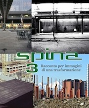
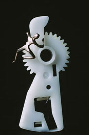
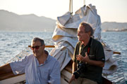
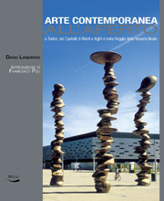

Chi desiderasse utilizzare immagini fotografiche, richiedere fotografie e volumi editi, oppure circuitare le mostre, può indirizzare a Liliana Lanzardo, Lungo Po Antonelli 189/d 10153 Torino, 011 8996583, lildar@libero.it
Dario Lanzardo
Immagini e racconti

Iniziative
MAGGIO-DICEMBRE 2019
Almese, Riccetto, Torre medioevale, mostra delle armature medioevali, Il Convitato di ferro. il 10 novembre ore 10, presentazione del romanzo di Liliana Lanzardo, Eugenio e le sue madri, Neos edizioni 2019
OTTOBRE 2018
Il giorno 3 ottobre alle ore 18 vi sarà la presentazione del volume "Il racconto fotografico di Dario Lanzardo" alla Cooperativa Borgo Po e Decoratori ("Gli Imbianchini") di via Lanfranchi 28 a Torino, con la partecipazione di Goffredo Fofi, Gianni Oliva e Alessandra Demichelis.
SETTEMBRE 2018
Dal 1° settembre al 12 ottobre 2018, sarà esposta la Mostra "Cosa sono le nuvole?”, a Colleretto Giocosa, all’interno delle manifestazioni della X edizione Settembre Giacosiano.
GIUGNO 2018
Presso l’Archivio storico della Città di Torino, via Barbaroux 32, è allestita una mostra fotografica di immagini dei fiumi di Torino di Dario Lanzardo.
Lunedì 4 giugno 2018 h20,30: presentazione del volume "Il racconto fotografico di Dario Lanzardo" all'unione Culturale Franco Antonicelli di Torino (via Cesare Battisti 4b).
Venerdì 29 giugno 2018 h20,30: presentazione del volume "Il racconto fotografico di Dario Lanzardo" all'unione Culturale Franco Antonicelli di Torino (via Cesare Battisti 4b).
MAGGIO 2018
La casa editrice SEB27 ha edito la biografia dal titolo IL RACCONTO FOTOGRAFICO DI DARIO LANZARDO, riguardante l’intera opera fotografica e narrativa, a cura di Liliana Lanzardo.
APRILE 2018
Il "Fondo Fotografico Lanzardo Dario" è stato acquisito dall’Archivio storico della Città di Torino, presso la sua Fototeca, in via Barbaroux 32 Torino. Le pubblicazioni di Dario Lanzardo sono consultabili presso la biblioteca dell’Archivio Storico. (Servizio Archivi, Musei e Patrimonio Culturale. Divisione Servizi Culturali e Amministrativi, 011 01131831).
AGOSTO 2017
Mostra “Cosa sono le nuvole?” a Sauze di Cesana, Località Grangesises
AGOSTO-SETTEMBRE 2015
Mostra di Goethe a Murazzano
GIUGNO-SETTEMBRE 2014
21-29 giugno 2014, a Piozzo (Cuneo) fotografie nell'ambito della manifestazione COME L'ACQUA CHE SCORRE promossa da ELLISSE
14 giugno - 15 settembre 2014, Stazione d'arrivo della Dentiera a Superga (Torino) mostra CHE COSA SONO LE NUOVOLE? (con la collaborazione di Luca Mercalli e Daniel Cat Berro)
INIZIANTIVE MAGGIO-OTTOBRE 2012
Il 10 maggio 2012 ( giovedì), ore 18 inaugurazione della Mostra Graphic Novel "Il principio di ARCHIMEDE" opera di Marco D"Aponte, con tavole originali del graphic, dipinti , fotografie scattate da Dario sulla nave Punta Amica nella quale era imbarcato come allievo ufficiale. La mostra è al Museo di Scienze naturali di Torino via Giolitti 36, sino al 17 giugno.
Da metà luglio sino al 6 settembre la mostra sarà esposta al castello di Lerici, in provincia di La Spezia.
Si inaugura il 19 maggio 2012 la mostra sulle Nuvole con foto di Dario insieme a opere del pittore Carena a Murazzano, dal titolo "Dialogo tra le nuvole".
Dal 24 maggio al 10 giugno, altra mostra sulle Nuvole, a Villa Caccia a Romagnano Sesia.
Una mostra sulle armature a Casa Cavassa a Saluzzo aperta 30 giugno -26 agosto 2012, con organizzazione di eventi ad hoc. (e successivamente "Cosa sono le nuvole", dal 9 dicembre 2012).
A Fosdinovo di Lunigiana la Giunta comunale (" secondo la tradizione di scegliere un autore locale o un evento ogni anno ") dedica a Dario il mese di agosto 2012 per l"evento "l"artista dell"anno" con mostra antologica, presentazione del libro "Il desiderio dell"acqua" e altri suoi libri nel torrione del castello Malaspina.
Si stanno preparando fuori Torino le presentazioni degli ultimi libri con mostra: a Genova, e La Spezia e forse Lerici sul graphic novel "Il principio di Archimede"
SPINA 3:RACCONTO PER IMMAGINI DI UNA TRASFORMAZIONE

Il 28 aprile 2011, l'Unione culturale Franco Antonicelli ha inaugurato in ricordo di Dario Lanzardo, la mostra fotografica Spina 3: Racconto per immagini di una trasformazione. Cambiamenti di carattere strutturale, dagli arredi urbani, al riutilizzo edilizio, fino ai nuovi edifici o ad opere pubbliche, hanno trasformato una zona di vecchia edilizia industriale e privata, cambiando radicalmente aspetto e funzioni di parti consistenti di una città, ridefinendone le relazioni e disegnando un nuovo paesaggio urbano. È quel che sta avvenendo, ormai da anni, nell'Ambito di trasformazione denominato Spina 3 - previsto dal Piano Regolatore Generale approvato nel 1995 - che interessa in modo particolare la Circoscrizione. Quattro fotografi, tra i quali Dario Lanzardo, che fu promotore dell'iniziativa, raccontano il cambiamento in corso, sotto la supervisione di un urbanista ed attraverso una suddivisione del territorio corrispondente ad interessi e poetiche di ciascuno degli autori.
La mostra è stata in Via Stradella 192 alla quinta circoscrizione.
ANNI SETTANTA, UN DECENNIO DI FOTOGRAFIA MILITANTE
12-25 settembre 2010, Genova, Biblioteca Berio, mostra ‘Anni Settanta, un decennio di fotografia militante’. «Selezionando dal mio archivio le circa novanta fotografie per questa mostra, ho inteso offrire un contributo personale alla conoscenza di un periodo della nostra storia che ho vissuto direttamente sia come fotografo sia come “soggetto attivo”».
Lerici: presentazione di «L’OMBRA DELLA GULFSTREAM»
Sabato 18 settembre 2010 alle ore 12,30 in piazza Mottino nell'ambito di 'Lerici legge il mare' il prof.Euro Puntelli e l'autore presenteranno il romanzo «L'Ombra della Gulfstream»
L’OMBRA DELLA GULFSTREAM
 (2010) In questo romanzo, Dario Lanzardo colloca il processo formativo del personaggio principale, sullo sfondo del rapporto fra la civiltà industriale e la natura come già aveva fatto con il romanzo d’esordio Il Principio di Archimede (Effigie 2006), e con gran parte dei suoi numerosi ‘racconti’ fotografici.
(2010) In questo romanzo, Dario Lanzardo colloca il processo formativo del personaggio principale, sullo sfondo del rapporto fra la civiltà industriale e la natura come già aveva fatto con il romanzo d’esordio Il Principio di Archimede (Effigie 2006), e con gran parte dei suoi numerosi ‘racconti’ fotografici.
IL MITO COME PERDITA A COLLEGNO, CERTOSA REALE
 Venerdi 29 gennaio 2010, ore 18, alla Sala delle Arti, parco C. A. Dalla Chiesa, Certosa Reale – Collegno, inaugurazione della mostra ‘Il Mito di Helios’ nell’ambito della quale Dario Lanzardo espone ‘Il Mito come perdita’ quattro dittici (stampe lambda 50x70).
IL CONVITATO DI FERRO AL CASTELLO SALVATERRA DI IGLESAS
Sabato 31 ottobre 2009, si è inaugurata la ristrutturazione del Castello Salvaterra di Iglesas con la mostra fotografica permanente di Dario Lanzardo Il Convitato di Ferro a cura di Mauro Rizzo. Sessanta gigantografie tratte dalla mostra omonima esposta per la prima volta al Palazzo Reale di Torino nel 1987 in occasione delle celebrazioni del 150° Anniversario della fondazione dell’Armeria Reale di Torino voluta da Carlo Alberto di Savoia.
LERICI LEGGE IL MARE
 Lerici legge il mare, rassegna di letteratura e cultura marinaresca promossa e organizzata dal Comune di Lerici in collaborazione con l’Editore Mursia. Sabato 19 settembre 2009 Marco Ferrari e Dario Lanzardo hanno presentato al pubblico rispettivamente “Cuore atlantico” e “Il Principio di Archimede” (effigie 2006) sulla goletta Oloferne in navigazione nel Golfo di L Spezia..
IL FOTOGRAFO E LA BAMBINA
 (2008) «Il fotografo e la bambina» si rivolge non solo a tutti gli appassionati di fotografia, ma anche a chi, soffermandosi a osservare uno scatto che lo colpisce, si chiede per un istante quale intreccio ci sia fra quell'attimo sospeso per sempre, l'occhio del fotografo e la propria percezione dell'immagine.
(2008) «Il fotografo e la bambina» si rivolge non solo a tutti gli appassionati di fotografia, ma anche a chi, soffermandosi a osservare uno scatto che lo colpisce, si chiede per un istante quale intreccio ci sia fra quell'attimo sospeso per sempre, l'occhio del fotografo e la propria percezione dell'immagine.
L'ARTE CONTEMPORANEA ALL'APERTO
(2008) Dopo La Città delle statue, con questo volume Dario Lanzardo esplora l’altra faccia dell’arte pubblica della città di Torino e dell’area metropolitana: quella recente e in continua evoluzione degli interventi di scultura contemporanea.
Il principio di Archimede - Romanzo

(2006) “Un cargo, una Leica, un allievo di macchina e il suo capitano, l’ombra di un sospetto.
L’avventura di un viaggio sospeso fra terra e mare, superficie e profondità, apparenza e verità.
Il romanzo di formazione di un eclettico fotografo scrittore.”